ENTR 390: Digital Product Design
Design Project 1: "RecruitU"
Prompt: Design a digital solution to a problem relating to the career placement (internship or job) experience.
Process:
- Persona Development: User Personas and Empathy Mapping
- Wireframes
- Prototyping
Result:"RecruitU", an app to ease the recruiting experience of uiversity students looking to find part-time jobs or internships in their college town. RecruitU connects students and employers interested in each other to save students the hassle of searching through and applying to an overwhelming amount of job postings.
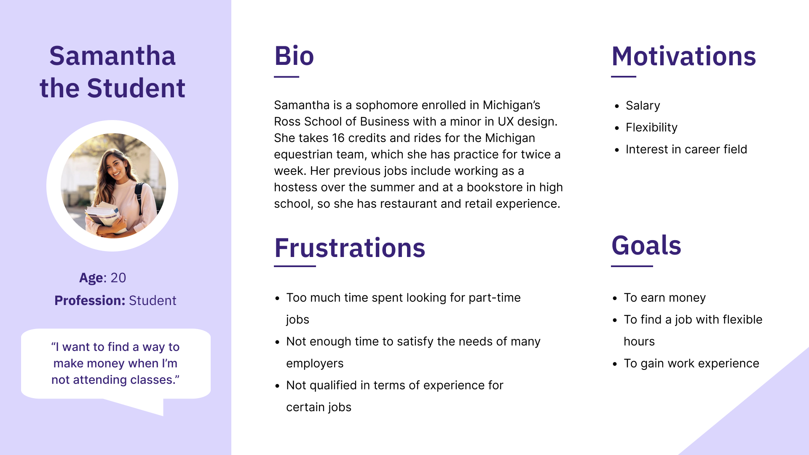
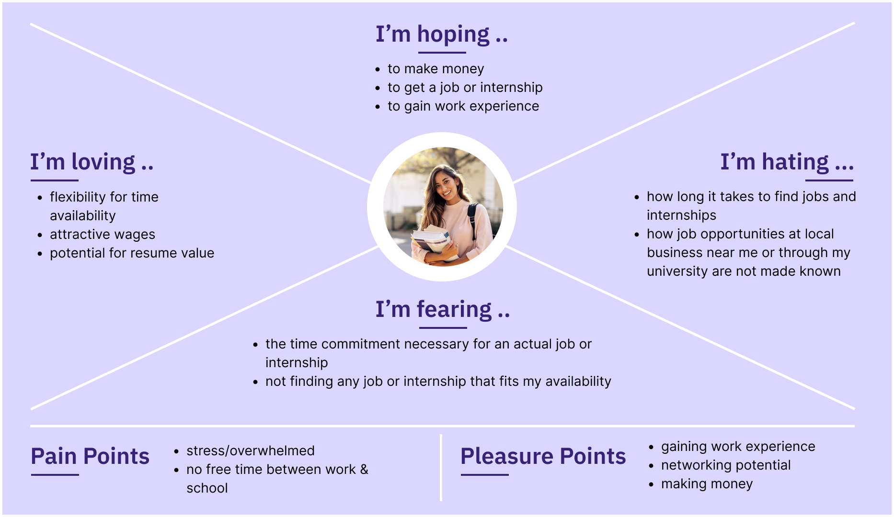
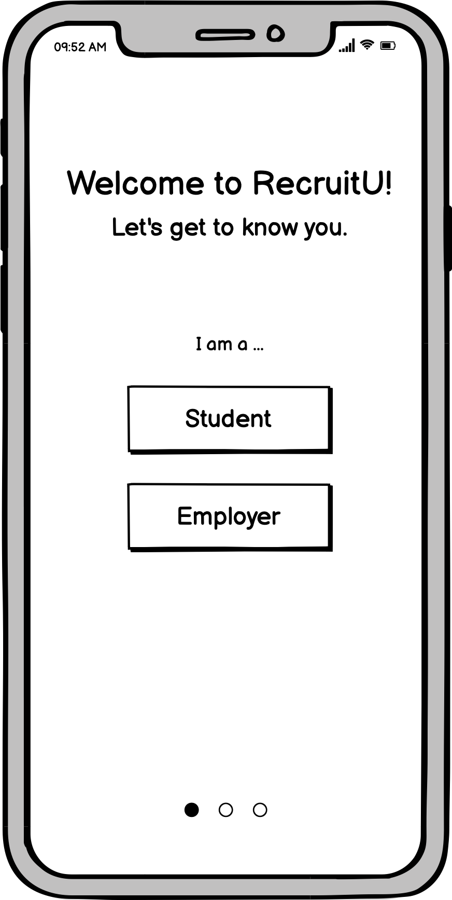
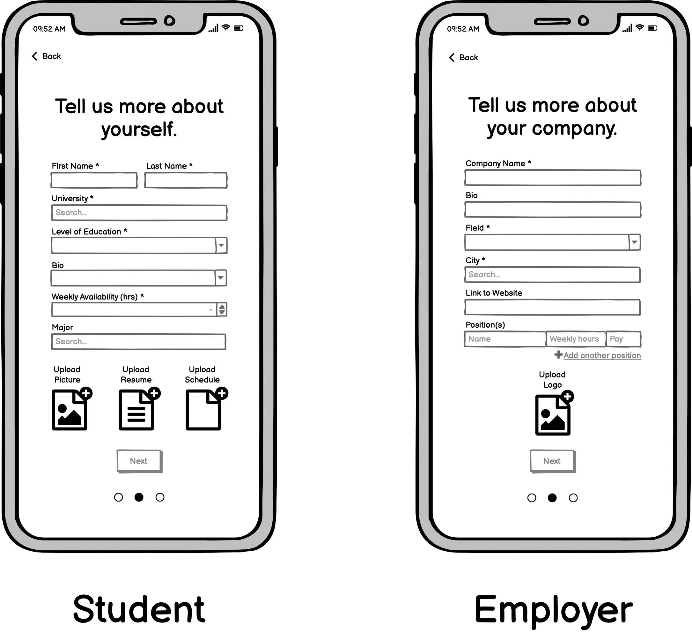
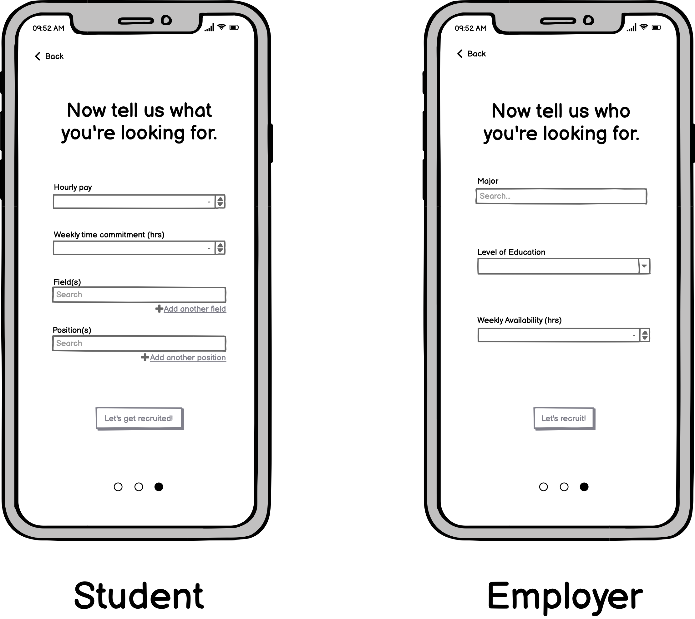
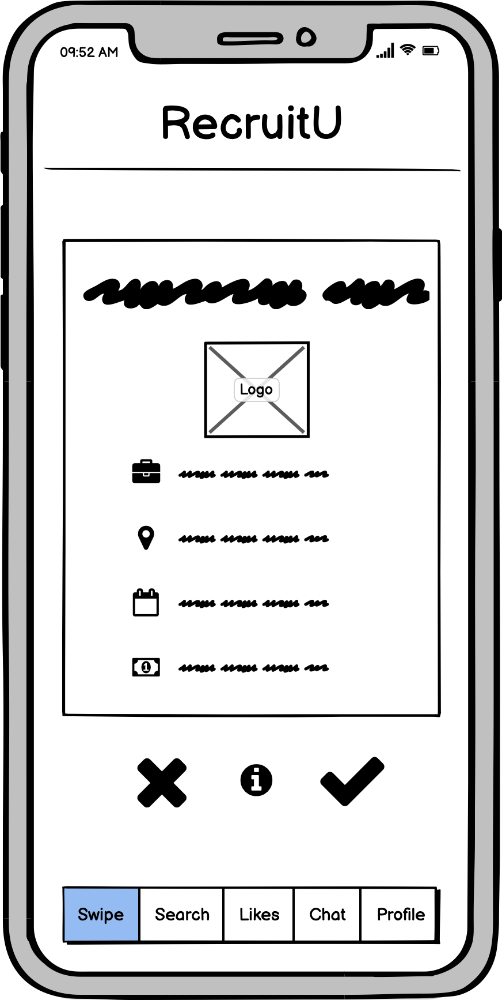
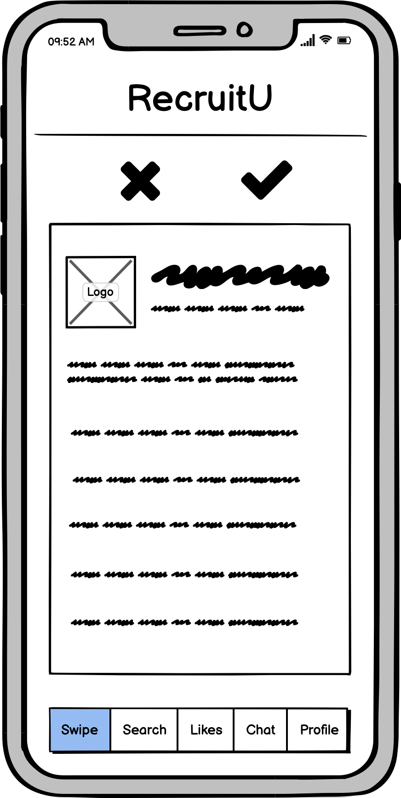
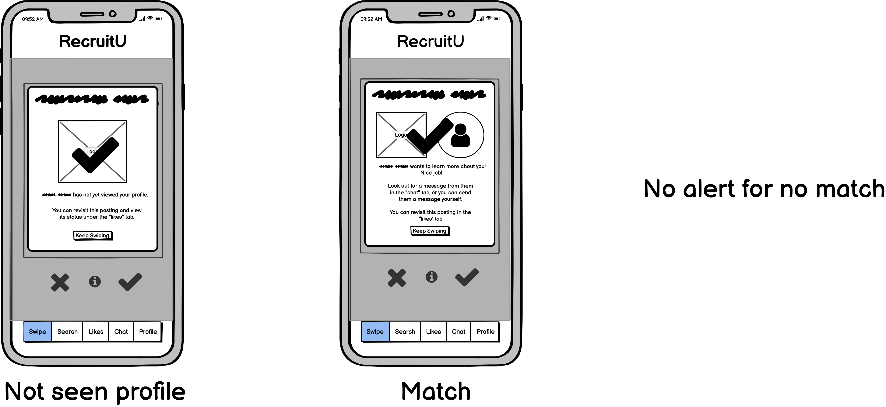
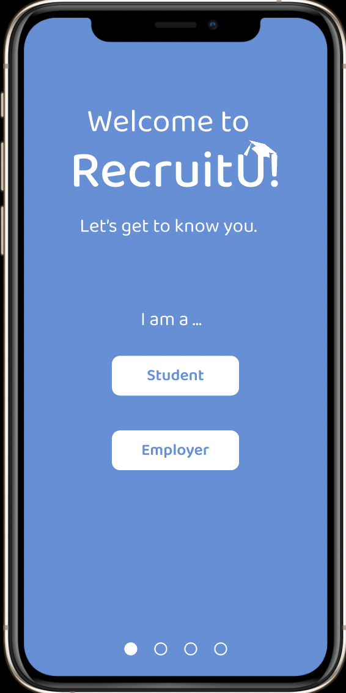
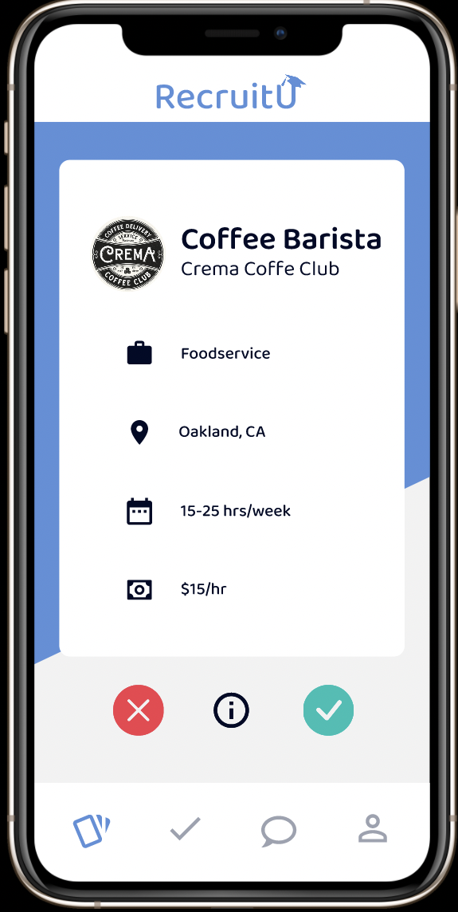
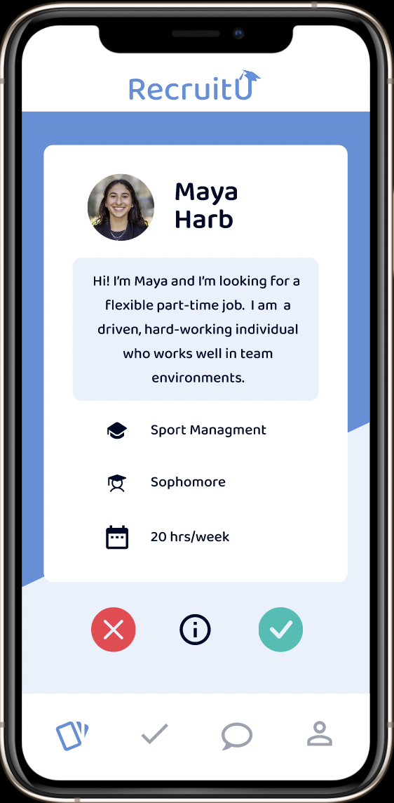
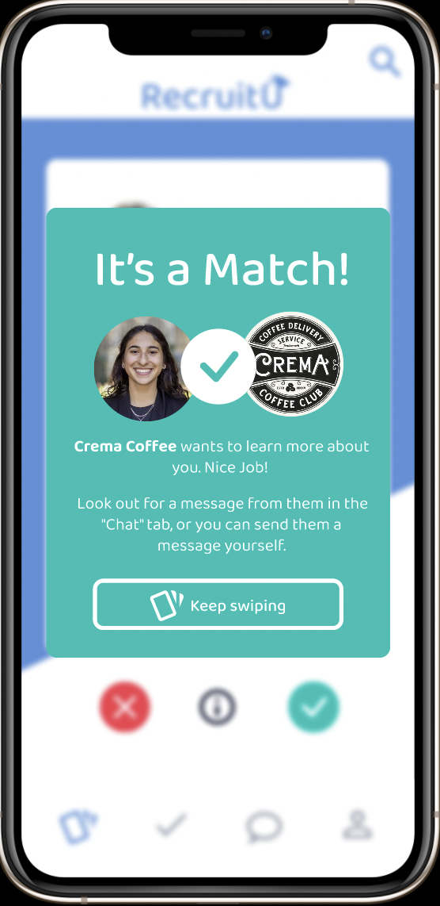
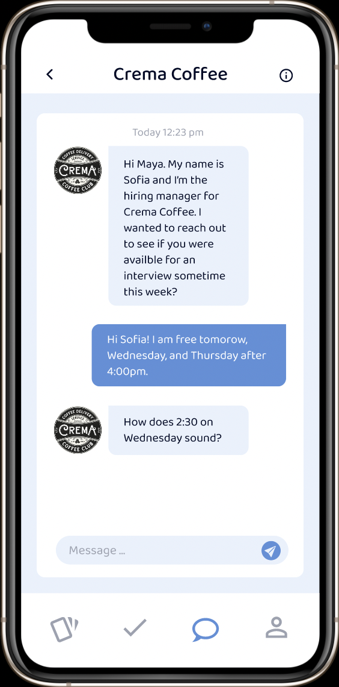